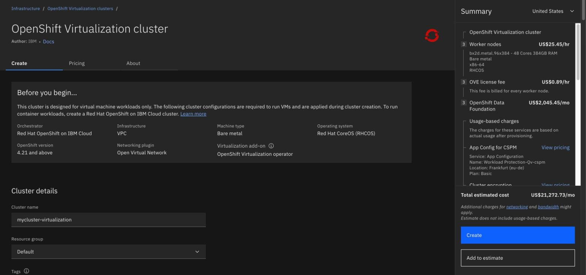

Where ROVS fits, and where it does not
By the end you can name the settings that are sealed when you order a ROVS cluster, say which workloads belong elsewhere, and explain why three workers is a minimum and not a plan.
Northgate Freight is moving off vSphere. The company is made up; the screens and limits in this unit are real. Its estate is mixed. Some of it belongs on ROVS and some does not. Better to find out now than three weeks into a migration.
Every screenshot and statement in this unit comes from real runs on lab clusters.
IBM makes these choices for you
These settings are configured at cluster creation and cannot be changed afterwards. There is no in-place change. The fix is a new cluster.
Storage is ODF or File Storage for VPC (Beta). At least one is mandatory, and IBM does not document a path to switch. Outbound traffic protection is disabled and cannot be enabled. The licence is OVE, charged per instance-hour per bare metal worker, with no BYOL.
You can still change: the number of workers, the number of worker pools, adding zones, the cluster version, and the rules inside your security groups.
From vSphere: this is closer to buying a converged appliance than building a cluster. The hardware envelope is chosen for you and the network settings come sealed.
The order form says so too
These are real screens from the ROVS ordering page. Click where you would click. After two misses the right place is marked.
![The ROVS ordering page. A Before you begin panel gives the fixed settings: orchestrator Red Hat OpenShift on IBM Cloud, infrastructure VPC, machine type Bare metal, operating system Red Hat CoreOS, OpenShift version 4.21 and above, networking plugin Open Virtual Network, and virtualization add-on OpenShift Virtualization operator. Below it, Cluster details asks for the cluster name, resource group and tags. A Summary panel on the right prices three worker nodes, an OVE license fee and OpenShift Data Foundation.](../images/04/order-form-and-pricing.jpg)
Where does the form list the settings that ROVS fixes for you?
Show where
Right. The Before you begin panel. Orchestrator, infrastructure, machine type bare metal, RHCOS, OpenShift 4.21 and above, Open Virtual Network and the virtualization add-on are all applied during cluster creation.

Which line in the Summary is the licence?
Show where
Right. The OVE license fee, billed for every worker node. OVE is the only licence on ROVS. There is no bring-your-own-licence and no Cloud Pak entitlement.
Does it fit on ROVS?
Northgate's estate has four awkward workloads. Pick an answer for each, then read why.
A Northgate team needs its workers in São Paulo.
Show the answer
ROVS runs in five regions only: Dallas, Washington DC, Toronto, Montreal and Frankfurt. A ROVS create in São Paulo was refused at once with "not supported in this region". For anywhere else you install OpenShift Virtualization yourself on a standard cluster.
A developer VM runs a hypervisor of its own, a nested ESXi lab.
Show the answer
Ran is not supported.Nested virtualization is not supported. On the test cluster a nested hypervisor did run, but do not read a working nested lab as permission to put one in production.
Northgate's production SAP HANA system.
Show the answer
SAP does not support SAP HANA and SAP business applications on OpenShift Virtualization, and the statement has no production carve-out. IBM's alternatives are PowerVS, RISE with SAP on PowerVS, or VPC with SAP-certified profiles. Dev and test instances are workable, with Red Hat supporting the platform and SAP not supporting the workload.
Fifty Windows Server VMs.
Show the answer
Red Hat lists OpenShift Container Platform among the products that inherit Microsoft's SVVP certification for Windows guests. You must provide and manage the licences for every guest operating system, including Windows. Nothing in the ROVS licence covers guests.
Three workers, then two problems
Ceph keeps three copies of your data, and it needs two of them to serve it. Three workers is IBM's minimum. Six is IBM's production floor for this layout.
A three-worker cluster has one worker in planned maintenance. Another worker then fails. What happens to the VMs whose data was on those copies?
Show the answer
They hang. They do not fail over.With one copy left, ODF's default min_size=2 blocks I/O rather than risk the data. Build to three and you can survive a failure or a maintenance window, but not both at once. This is not the failure a VMware admin expects.
Northgate wants to live migrate VMs to any worker and to use VNIs. Which layout?
Show the answer
In a single zone, live migration can go to any worker and VNI networking is simple. In three zones, live migration stays inside one zone and each VNI is tied to one zone. IBM recommends single-zone clusters for virtualization workloads. Zone and region protection then comes from a second cluster.
Three questions
Review question from Unit 1.2. What backs a VM disk on ROVS, in the place of a VMDK?
Show the answer
Each VM disk is backed by a PVC. A StorageClass is the type of storage the PVC asks for, so it is closer to a datastore.
Which of these can you still change after the cluster is ordered?
Show the answer
The number of workers, the number of worker pools, added zones, the cluster version and the rules inside your security groups can change. Bare metal only and the storage choice are sealed.
Northgate has fifty RHEL VMs. What does the ROVS licence do for their subscriptions?
Show the answer
A full OpenShift Container Platform subscription includes RHEL guest subscriptions. The OVE licence that ROVS uses does not.
You know where the edges are
Sealed at order: bare metal, RHCOS, OVN-Kubernetes, MTU, licence, storage. Three workers is a minimum. Vendors decide whether they support your workload, not Red Hat.
Tutorial chapter 06, Check the limits of ROVS and when not to use it, is the list to read before you commit a workload. Chapter 04, Order a ROVS cluster, lists every permanent choice.